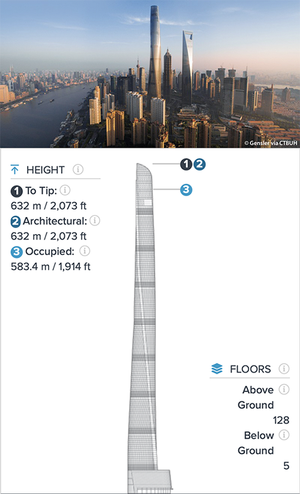
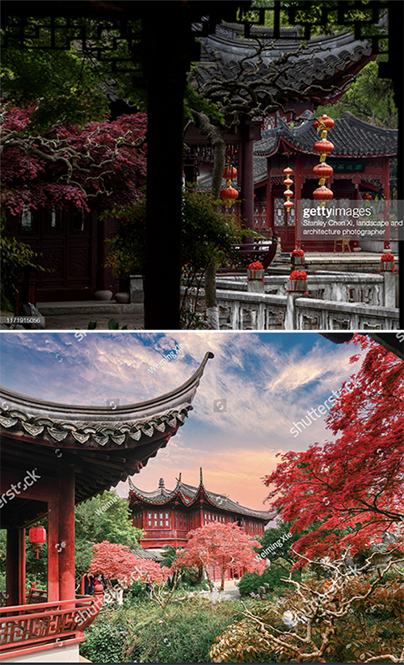

Modern
Shanghai Tower
Location:
No. 501, Yincheng Middle Road, Pudong New Area, Shanghai
History
Shanghai Grand View Park
Location:
No.701, Jinshang Road, Qingpu District, Shanghai
Modern
"Shanghai Center" is divided into three themes of Shanghai Charm, Shanghai Heights, and Shanghai Center. It combines dynamic and static and the combination of virtual and reality and interprets the charm, inheritance, and development of Shanghai-style architecture through static and vibrant images. The architecture of the city can best reflect the culture of the town. Shanghai-style architectural culture is a derivative of Shanghai-style culture. Architecture has always been the most expressive part of human culture. It shows the value trends of different cultures in different periods. Tolerant, implicit, generous, and innovative Shanghai-style architecture is a unique style that can accommodate the entire architectural world. This is the legendary "scent of Shanghai."
In the torrent of history, each era has its legendary buildings. They continue to shape the height of the city and represent the glory and classics of the past. From Shanghai Hotel, Lianyi Building, Portman Tower, Jin Mao Tower, World Financial Center to the Shanghai Center, these buildings' height is continuously updated, inheriting, and surpassing. The birth of the Shanghai Tower reached the culmination of the history of architectural development. Past and the future meet, creating the climax of the times.
History
Shanghai Grand View Garden is a large antique garden designed according to the description of the famous "Dream of Red Mansions" in the Qing Dynasty of China.
According to the novel's artistic conception and characteristics, the plant configuration of each scenic spot in Daguan Garden is designed. Yihong Siheyuan is planted with Xifu crabapple, plantain, and Podocarpus, which has the characteristics of "Yihong, fast and green." The Xiaoxiang Pavilion is produced with all kinds of bamboos, showing the artistic conception of "the tail of the phoenix has a forest, and the dragon has a brocade," showing the loneliness and willfulness of Xiao Township. Two trees were planted behind the pond of Luncui Temple. Because this tree is like a canopy, the feudal system stipulates that this tree can only be reproduced by people above level five, which means the Miao people's nobility. The yard is planted with pine trees, bamboo, plums and green maple trees, pomegranates, winter plums, etc. Miaoli's image is proud of its plum and solitary bamboo. Daoxiang Village's entrance is a garden full of melon seeds, fruits, and vegetables, showing the indifference and frugality of the owner Li Wan.